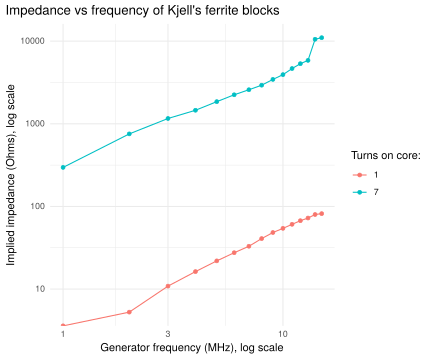

Kjell’s largest ferrite core
I’ve bought some ferrites from “Kjell”, a local electronics chain. The ferrites I bought are the largest clamp-on style ferrites they sell. I don’t know the material they are made of.
Kjell’s largest ferrite core
I’ve run a simple experiment: Connecting my Rigol signal generator to my Rigol oscilloscope (terminated at 50 ohm), running either 1 or 7 turns through a ferrite core (7 turns corresponds to the length of a stray wire on my bench). The improvised setup is probably not good above 15 MHz, but these are my data on calculated impedance.
Since both the generator and the scope is terminated in 50 ohms, the measured voltage at the scope end should be \[V_s = \frac{50}{50 + 50 + X_{f}} V_{g},\] with \(X_{f}\) being the unknown impedance, \[X_f = \frac{V_g}{V_s}\cdot 50 - 100.\] I sent 1V rms out of the generator.

This is solid impedance also at the lower frequencies, even with only one turn, and might indicate that the cores are made of a material that will be useful RFI suppression at HF frequencies.